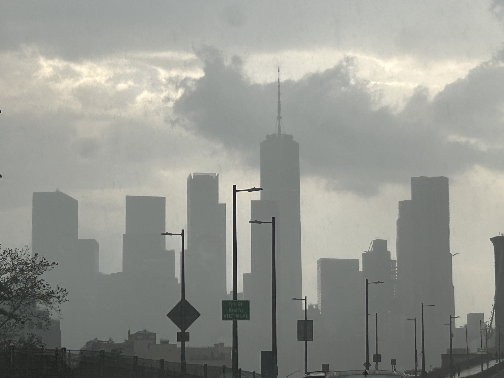
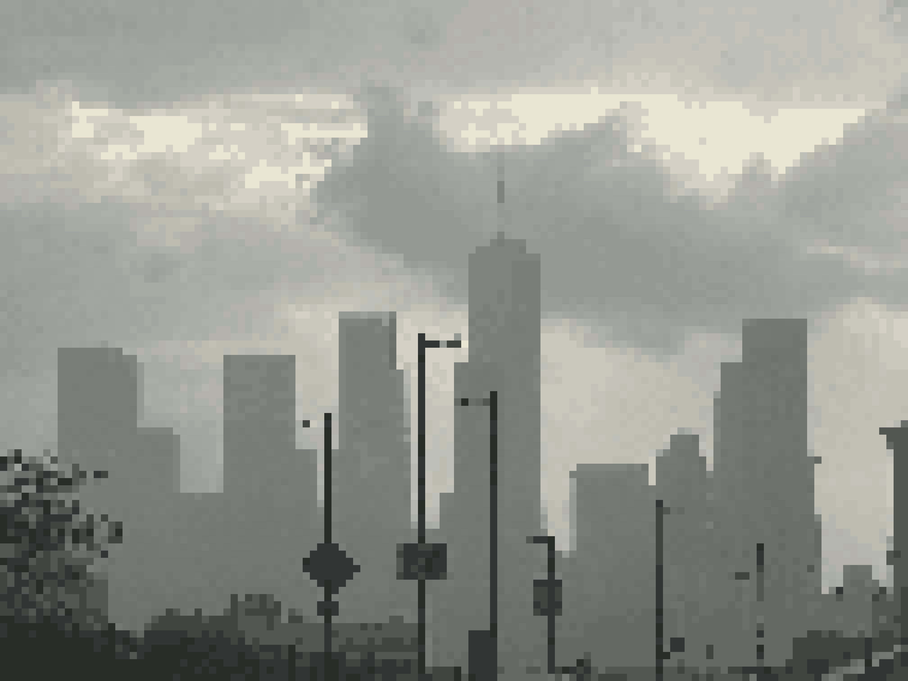
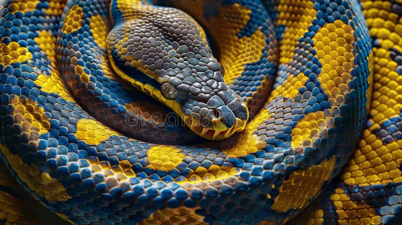
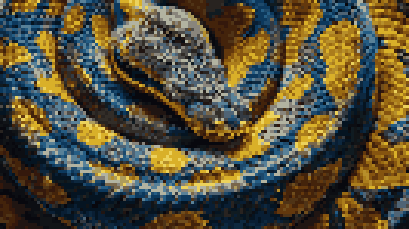

Python and pixels
Dev update
August 22, 2025
For this month's endeavor, I decided I was going to pick up Python and create a little project. I did CodeAcademy's Python 2 course for a foundations for syntax. I come from a C++ background so the syntax rules for Python I found to be a bit redundant at times and at other times frustrating but it was a necessary step to understanding that indentation is very important for the readability and syntax of your code.
Pixel Art Convertor
Since python doesn't have a native way to intaking image files I needed a way to able to directly manipulate images inside of python so I searched and found a Python Library called Pillow, It seemed to the be the easiest one to pick up and for my use-case.
I created a new project folder inside of VSCODE and ran the command

I imported the library using

Then declared an variable called img that is equal to the the PIL function of opening an image

We also convert the image to standard RGB so instead of relying on the palette the image supplies, we convert it to RGB to make color manipulation easier later on.
We now declare a block size for which we want to pixelated the image by. The higher the number, the more pixelated the image will appear because later on we will by diving the image size by this number, also declare a height and width variable and set it to the image size

We now create a variable called small which it equal to img.resize(). Inside of the resize function, we divide by the width and the height of the image by the block size we declared earlier. We then call the max function with the parameter of 1 and the result of width and height divided by block size. We do this because we want to ensure that pixel size never goes below zero otherwise that would crash the function. We then resample the resized image with Image.Resamlping.NEAREST. This tells python to grab the nearest pixel next to it after downsizing the the image and set it to that color.

Now that we have a copy of the image but reduced in size, we will scale it up back which will reproduce a pixelated-like image.
We declare a variable called pixelated and set it to the small variable resized with the original height and weight of the image and with the same resampling used earlier.

We now call pixelates.saved(“Whatever you want to call saved image”)
We now have a pixelated version of our image and we're able to change the intensity of the pixelation by change the block size!
   I added more functionality later on to the program like being able to manipulate the amount of colors the program is able to grab and as well as the ability to use a custom palette, check out the repository here. 👋